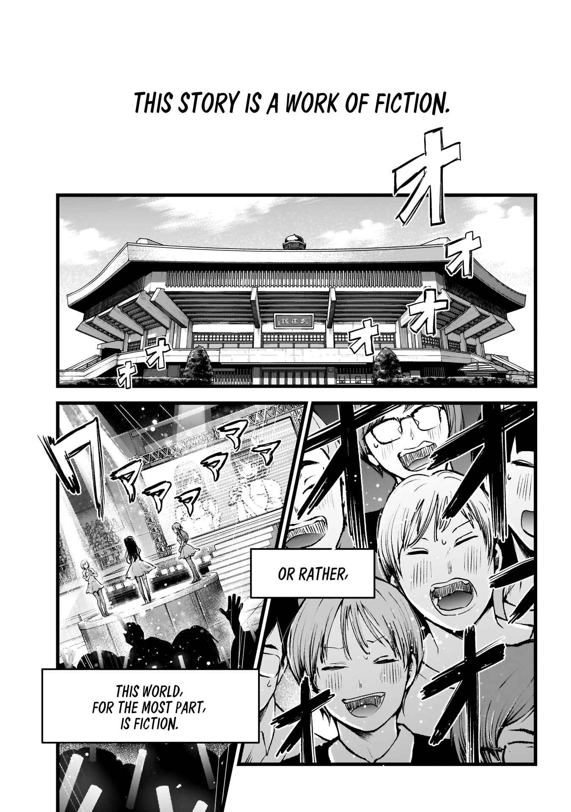

Capítulo de muestra
En iPhone, abre esta página en Safari y usa Compartir → Añadir a pantalla de inicio → Abrir como app web.

En iPhone, abre esta página en Safari y usa Compartir → Añadir a pantalla de inicio → Abrir como app web.
